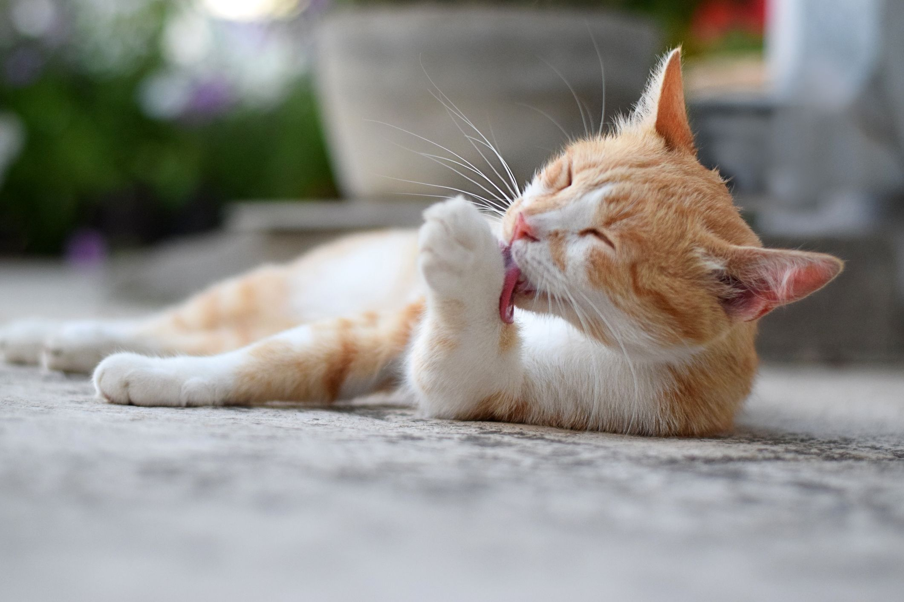
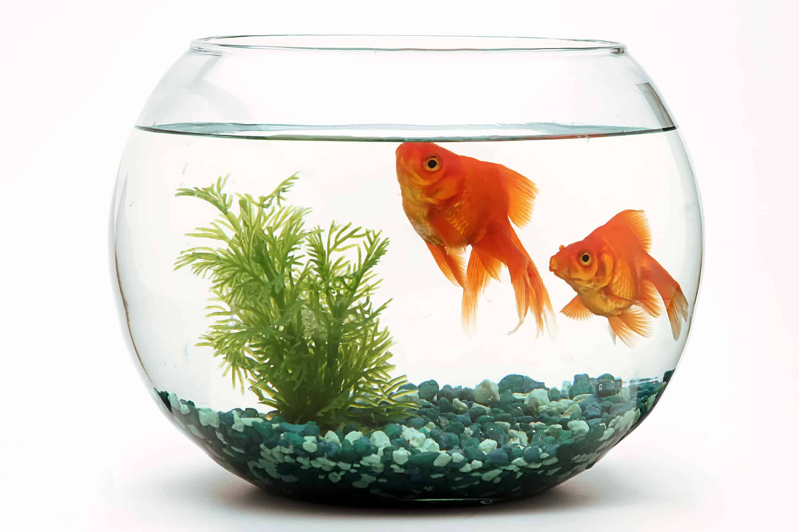
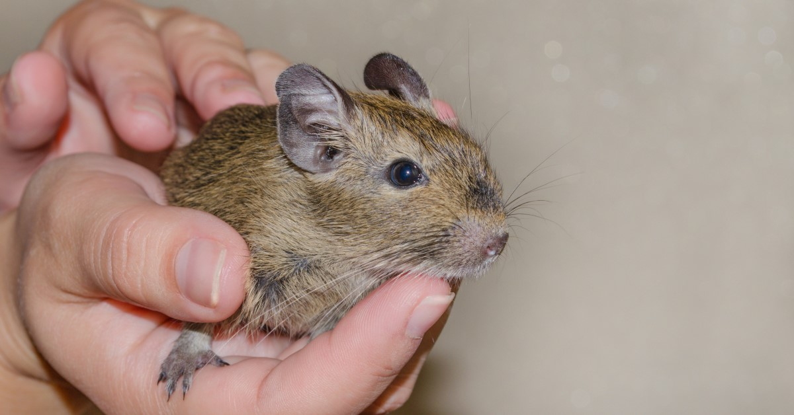

Dogs
Dogs make exceptional pets, offering unwavering loyalty, companionship, and emotional support. Their diverse breeds cater to various lifestyles, and their playful nature ensures a constant source of joy. Responsible ownership includes proper care, training, and nurturing the unique bond between humans and their canine companions.

Cats
Cats make delightful pets with their independent yet affectionate personalities. They provide comfort through their soothing purrs and are known for their low-maintenance care. Welcoming a cat into your home can bring a sense of tranquility and companionship to your life.
Fish
Fish are captivating and low-maintenance pets, bringing a sense of serenity to any space with their graceful movements and vibrant colors. Setting up an aquarium can be a therapeutic and educational experience, offering a unique window into the underwater world. Regular care and water quality maintenance are essential to ensure the health and longevity of these aquatic companions.
Birds
Birds make charming and interactive pets, offering colorful plumage and often entertaining personalities. Whether you choose a parrot's playful chatter or a canary's melodic tunes, their songs can brighten your day. Providing a spacious cage, proper nutrition, and mental stimulation are key to ensuring the happiness and well-being of your avian friend.

Small Rodents
Small rodents, such as hamsters, guinea pigs, and rabbits, are popular as pets due to their manageable size and gentle nature. They're a great choice for families with limited space and offer the joy of nurturing a tiny companion. Providing a secure enclosure, fresh bedding, and regular social interaction can create a rewarding and low-maintenance pet experience.
